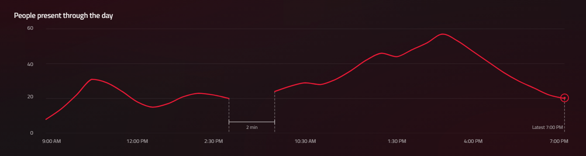
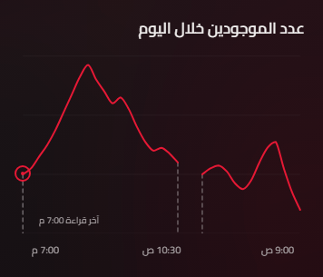

Paper IB4-0 detail (Latest 6:12 PM centered)Routed chart-annotations-en-1440

Paper JC5-0 detail (mobile AR)Routed chart-annotations-ar-390

5. Six-destination nav row — Variant B verdict
Variant B: fully transparent row over the page wash; divider + active red underline preserved.
Visible in every full-page capture above; reference Paper frames:
Paper 1GIV-0 desktop EN (daily active)Paper 1GNX-0 mobile AR (scrollable row)